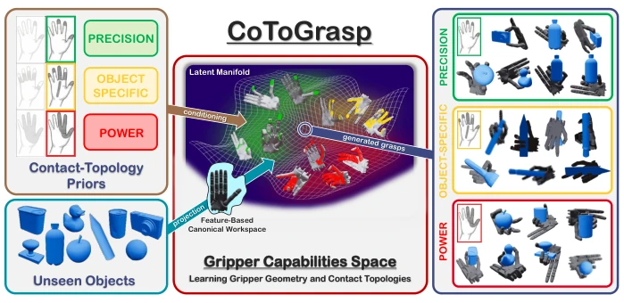
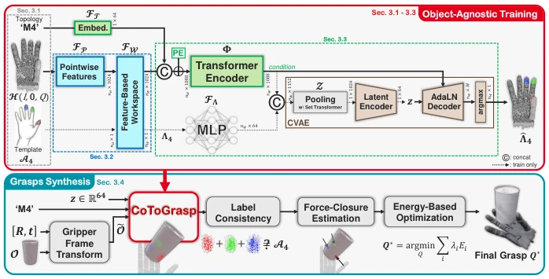
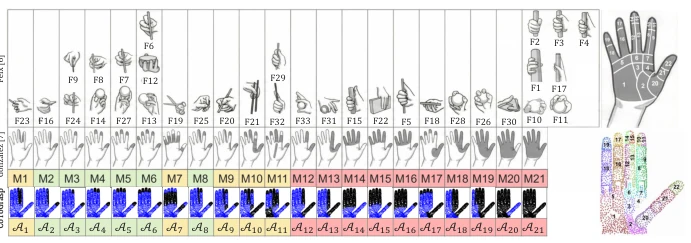
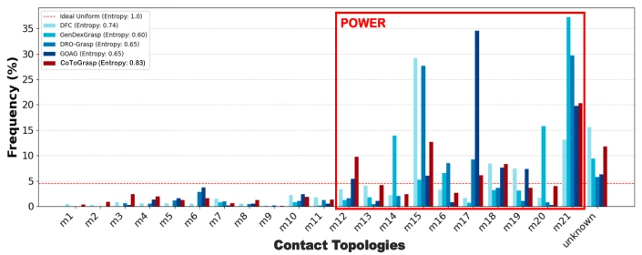
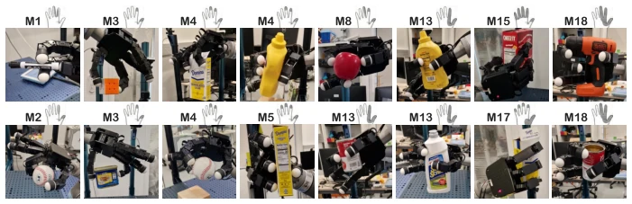
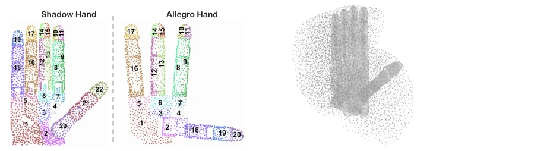
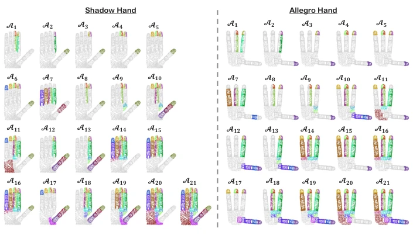
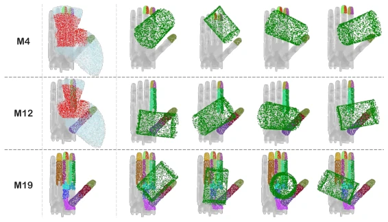
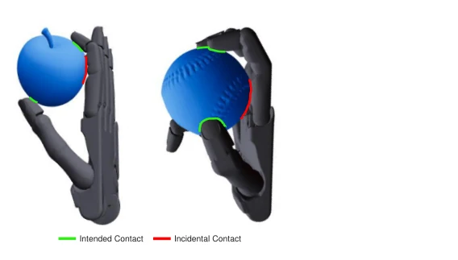
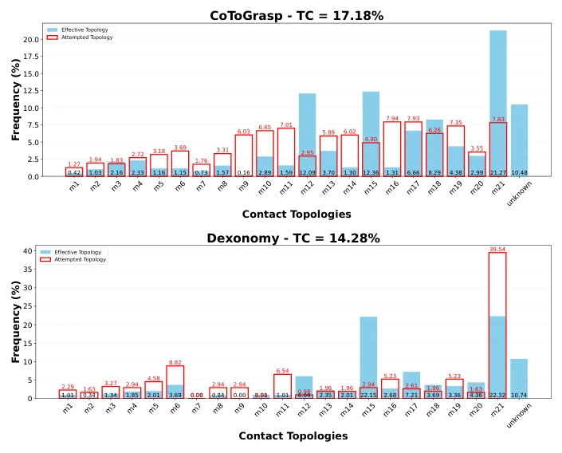

This CoToGrasp attempts to introduce a degree of "humanistic care" within the field of Dexterous Grasp, moving beyond merely focusing on whether force closure is stable to instead caring about "how to grasp in alignment with human intent". Its primary highlight is "Object-Agnostic training" (Object-Agnostic), claiming it can learn specific contact topologies without object annotation data. Technically, it projects object features into the manipulator canonical space, attempting to decouple semantics and geometry. However, reality is stark: in pursuit of topological diversity, its physical success rate (SR) is only 36.94%, far lower than pure stability baselines; after all, asking a manipulator to pinch an object it originally intended to hug makes steady grasping unlikely. Nevertheless, in terms of topological compliance (TC) and entropy metrics, it significantly outperforms Dexonomy [5], avoiding mode collapse. Although the real robot verification section demonstrates that the Allegro Hand can grasp, it provides no specific success rate, only stating "successfully executed", which somewhat evades the core issue. Overall, this is an ambitious attempt regarding functional diversity, but it still needs to learn from traditional methods in terms of physical robustness, as a 36% success rate may not be sufficient in the industrial sector.
Existing Dexterous grasp planners primarily optimize for physical stability. Methods such as DFC [26] and GenDexGrasp [24], while capable of stable grasping, tend to generate enveloping power grasps, lacking the contact topology structures required for fine manipulation. When alignment with downstream tasks is required, this generation bias results in extremely low efficiency, necessitating the generation of a large number of invalid candidates. Introducing human grasp taxonomy (Taxonomy) is a pathway to address functional intent, such as the contact topology proposed by Gonzalez [12]. However, existing methods like Dexonomy [5] heavily rely on large-scale object annotation datasets, strongly coupling topology with specific geometry, leading to generalization bottlenecks. Once object geometry does not match pre-computed templates, optimization fails or collapses. CoToGrasp aims to resolve this data bottleneck; through an object-agnostic paradigm, it decouples grasp semantics from object topology to achieve zero-shot generalization, while maintaining precise control over specific contact topologies, which is crucial for task generalization in embodied intelligence.

Fig. 1: Contact-Topology-Conditioned Grasp Synthesis. Given a desired se- mantic contact-topology condition (top left) – categorized into Precision, Object- Specific (highly constrained topologies tailored for specific tool use) or Power func- tional groups – and a novel, unseen object (bottom left), our framework synthesizes functionally diverse and physically stable grasps (right). Rather than learning con- tact topologies directly on the object geometry, we project local object features into a feature-based canonical workspace. This unified spatial representation effectively de- couples the functional intent from the specific object identity. Within this workspace, we learn a latent manifold (center) that models the intrinsic contact capabilities of the gripper, enabling zero-shot gener
The overall workflow is divided into two stages: object-agnostic training and grasp synthesis. The training stage is conducted entirely within the manipulator canonical framework, independent of object geometry. The core involves constructing a Canonical Feature-based Workspace (Canonical Feature-based Workspace), which is a discrete point set fixed within the manipulator coordinate system. Upon inputting object point clouds, local features are extracted via DGCNN, then aggregated and projected onto workspace basis points using kNN, utilizing Aligned Distance (Aligned Distance) as a gating mechanism to ensure surface orientation influences contact feasibility. Subsequently, a Transformer encoder processes these spatial tokens, capturing non-local dependencies and co-occurrence patterns of contact points. A Set Transformer compresses them into latent descriptors, which are input to a CVAE to generate probability contact masks. In the inference stage, object point clouds undergo rigid transformation into the canonical space, and the network predicts contact templates. The critical step is the verification pipeline: first, check label consistency to exclude geometrically incompatible topologies; second, estimate force closure to ensure physical stability; finally, solve joint configurations through Energy-Based Optimization (Energy-Based Optimization), introducing repulsion terms to prevent extraneous finger contact. This design enables the model to learn "hand capability" rather than "object shape", achieving true zero-shot generalization.

Fig. 2: CoToGrasp Method Overview. The proposed framework operates in two distinct phases. Top (Object-Agnostic Training): The model learns an intrinsic, gripper-centric contact manifold within a canonical feature-based workspace, indepen- dent of object geometry. Bottom (Grasp Synthesis): At inference, a target object is transformed into the canonical frame. The network’s contact-topology-conditioned prediction is strictly filtered through a validation pipeline before energy-based opti- mization aligns the gripper to yield the final stable grasp (Q∗).

Fig. 3: Semantic Grasp Taxonomy and Contact Mapping. (Left) Correspon- dences between the classical Feix [11] (F) taxonomy (top), the haptic Gonzalez [12] (M) taxonomy (middle row) and our derived point cloud contact templates Am (bottom row). We categorized the 21 templates into three distinct functional groups: Preci- sion, Power and Object-Specific (highly constrained topologies tailored for specific tool use). (Right) The 22 anatomical contact zones defined by Gonzalez (top) and the direct surjective mapping (ζ) onto our discrete gripper handprint H (bottom).
Experiments were conducted on the DexGraspNet simulation dataset and YCB real objects. Baselines include DFC [26], GOAG [32], Dexonomy [5], among others. Evaluation metrics, in addition to the standard success rate (SR), focus on introducing topological compliance (TC) and entropy (Entropy) to quantify functional diversity. Results show that CoToGrasp achieves 17.18% on TC, outperforming Dexonomy's 14.28%, and exhibits higher semantic entropy, demonstrating that it avoids mode collapse towards power grasps. Ablation studies indicate that label consistency and force closure verification are crucial for performance; removing them causes a significant drop in TC. Real-world verification was completed on the Allegro Hand, where Figure 5 displays grasp effects for multiple topologies, confirming kinematic feasibility. Although the SR is lower, it performs robustly on specific topology tasks, and the generation speed is the fastest (0.11s/grasp), making it suitable for real-time applications.

Fig. 4: Functional contact topology distribution across taxonomy-unaware planners. The histogram illustrates the distribution of grasps generated by uncondi- tioned baselines compared to CoToGrasp on the Multidex objects set. The unknown category represents physically stable grasps with unnatural contact patterns that fail to match any contact topology. Notably, unconditioned baselines exhibit a severe gen- erative bias (mode collapse) toward enveloping power grasps (red box).

Fig. 5: Real-World kinematic validation. CoToGrasp synthesizes diverse, topology-compliant grasps that are physically executable on a physical Allegro Hand using YCB [4] objects. The target contact topologies (indicated above each frame) demonstrate the physical viability of the generated grasps across both precision and power categories.
其他图片Other Figures

Fig. 6: Handprint areas and workspace constitution. Left: Discretized hand- prints of the Shadow and Allegro hands, illustrating the manually defined anatomical zone divisions. Right: A three-quarter view of the Shadow Hand’s workspace.

Fig. 7: Taxonomy transfer mapping for anthropomorphic grippers. The hand- prints of the Shadow Hand (left) and the Allegro Hand (right) are segmented into manually defined, corresponding anatomical zones (A1–A21).

Fig. 9: Topology-Conditioned Pose Sampling. For specific grasp topologies (such as M4 and M12), the initial object pose is sampled within a restricted kinematic region. Middle: The template’s full active sub-workspace is shown in light blue, while the truncated sub-workspace – filtered for reachability and palm clearance – is highlighted in red. Right: Examples of the initialized object point cloud ˜O (green) successfully placed within this feasible region after the sampled spatial transformation.

Fig. 10: Illustration of metric-induced misclassification. While CoToGrasp strictly respects the target contact topology, the kinematic optimization may result in incidental contacts where an adjacent phalanx rests against the object surface. Despite the repulsive term in our optimization energy function, these phalanges often cannot be pushed away due to inherent kinematic constraints. For instance, the left grasp illustrates an intended M3 pinch reclassified as M12, while the right shows an M4 grasp reclassified as M15. Although the intended contacts are successfully achieved and the grasps remain physically stable, these incidental contacts trigger a strict re- classification by our automated pipeline.

Fig. 11: Histogram comparing the frequencies of effective topologies and at- tempted topologies (as defined Sec. 4.2) among all stable grasps generated by Co- ToGrasp (top) and Dexonomy [5] (bottom).